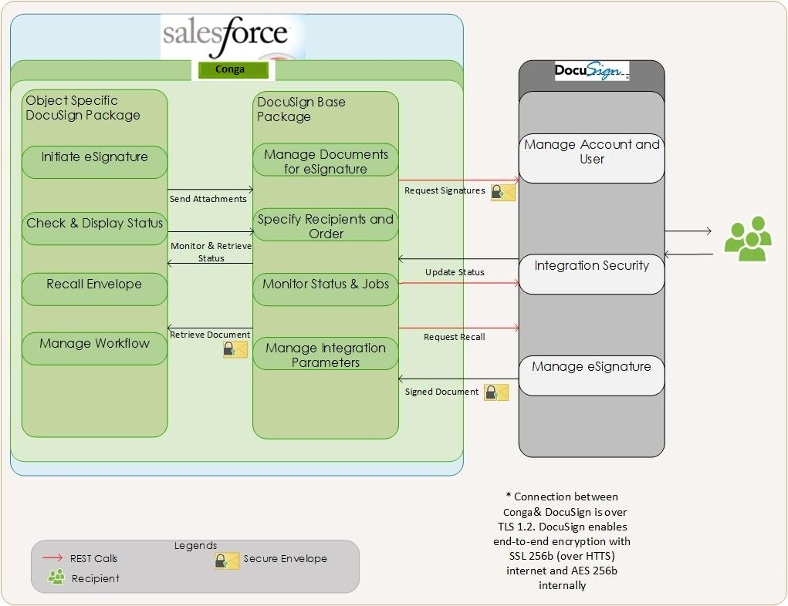

eSignature Request Workflow
This section elaborates the end to end workflow process from initiating eSignature to Managing Integration settings from Power.

After your Quote or Contract is configured and finalized with the required products, you can initiate the eSignature process when the agreement is generated and the document is ready for signature. The workflow is as follows:
- Select the attachments to be associated to the Agreement or Proposal. You can choose to auto attach documents or do it manually.
- Specify the order in which the attachments are merged to create a single agreement or proposal.
- Select or specify the recipients. You can choose to send the document to preconfigured default recipients and add additional recipients later on.
- Specify the email message.
- Preview the eSignature request.
- Submit the document for eSignature.
- Check eSignature status.
The sections further in the document take you through the configurations required for each of the processes.